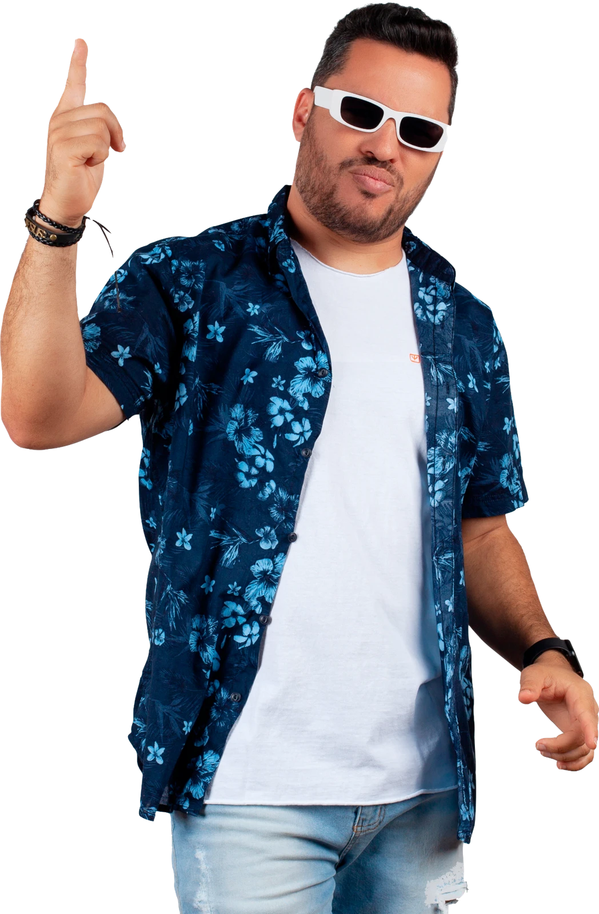
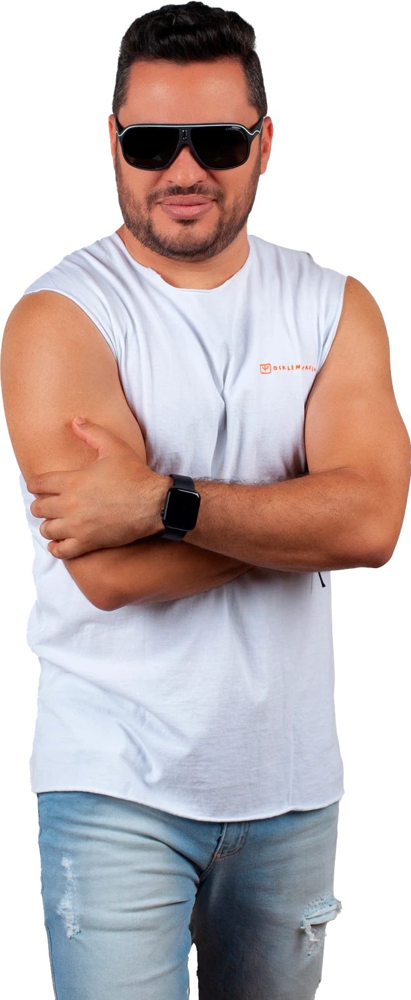

01
LO SHOW IN UN MINUTO
Dentro l’esperienza
Un primo sguardo all’atmosfera e alla produzione degli eventi.
LIVE EXPERIENCE · ITALIA
Voce, ritmo e persone che si incontrano. Tutta l’energia di Robertinho do Brasil, sul tuo palco.
▶Entra nello show↓
01 / LIVE EXPERIENCE
La voce, l’atmosfera e la risposta del pubblico. Momenti veri, ripresi durante gli eventi.
LO SHOW IN UN MINUTO
Un primo sguardo all’atmosfera e alla produzione degli eventi.
PRESENZA SCENICA
La musica prende vita nell’incontro con le persone.
IL PUBBLICO È PARTE DELLO SHOW
Forró, ballo e l’energia condivisa della musica brasiliana.
02 / LO SPETTACOLO
Voce e tastiera dal vivo, con impianto audio e illuminazione completi. Una proposta musicale con una precisa identità brasiliana, per dare carattere al tuo evento.
Interpretazione dal vivo e contatto diretto con il pubblico.
Struttura completa per accompagnare la musica con presenza e atmosfera.
Forró, piseiro, arrocha e ritmi latini. Il Brasile come punto d’incontro.

Do Brasil.03 / ROBERTINHO DO BRASIL
Dall’Espírito Santo ai palchi italiani: un percorso che porta con sé il ritmo, il calore e la voglia di stare insieme del Brasile.
Già conosciuto come Robertinho o Rei do Chinelado, oggi Robertinho do Brasil unisce le sue radici nel forró e nel piseiro a un repertorio aperto alla musica brasiliana e latina.
Al centro c’è il pubblico: ritrovare un ritornello, entrare nel ritmo, sentirsi parte della serata. Una proposta per la comunità brasiliana e per chi vuole scoprire questa energia dal vivo.
ESPÍRITO SANTO → ITALIA04 / INCONTRI & PALCHI
Locali e realtà con cui Robertinho ha condiviso la sua musica.
IL BRASILE, PIÙ VICINO.
VENETO · LOMBARDIA
MODENA · PARMA · REGGIO EMILIA